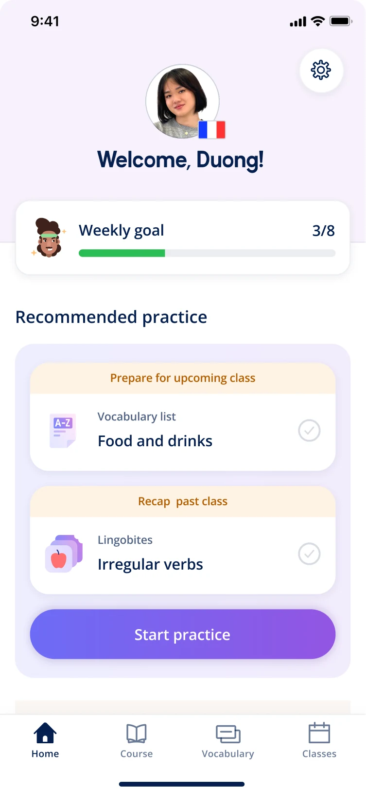
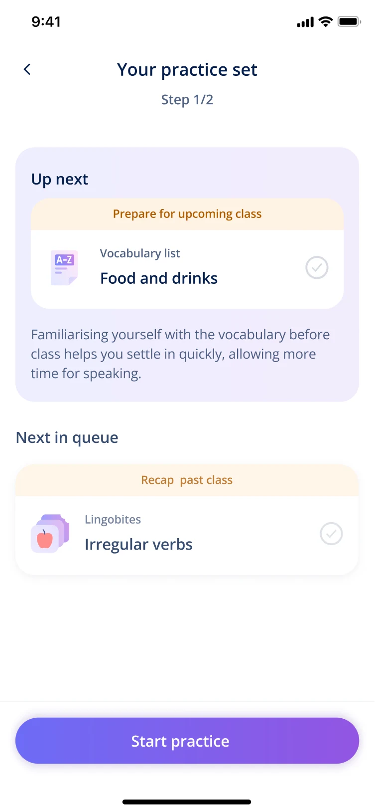
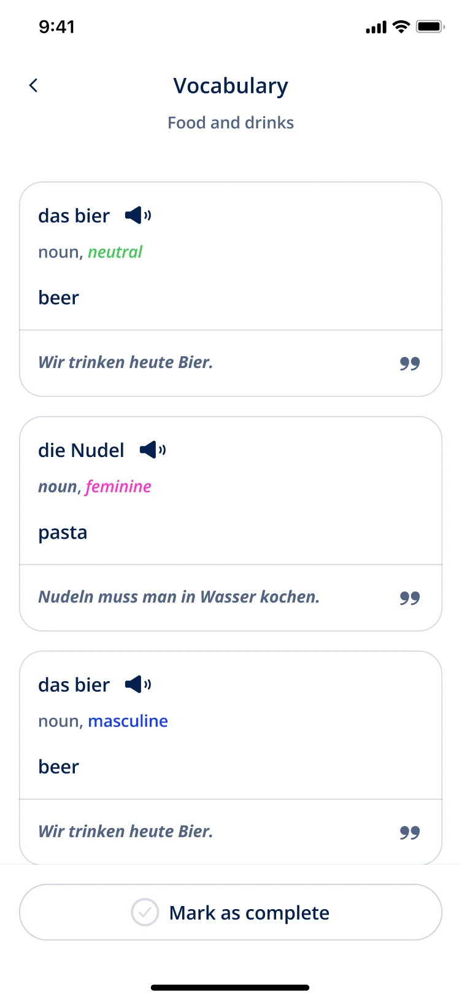
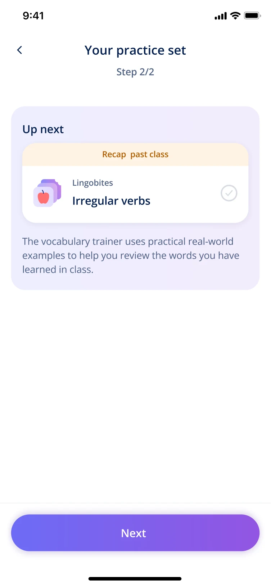
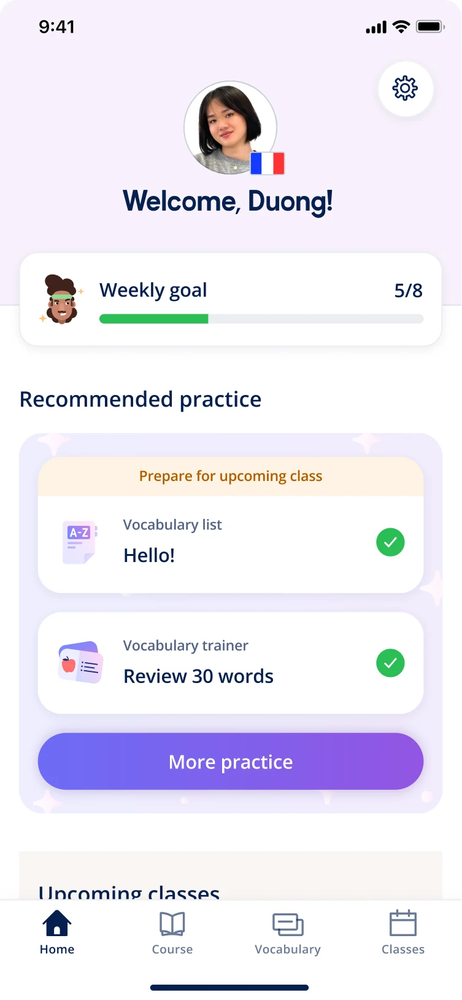

1 Solution 1: Practice set
Surfaces up to two tailored activities each day that are accessible with a single Start Practice button. Activities are selected based on the user’s class schedule and labels on each explain why they are recommended.
Hypothesis: Reducing decision fatigue by surfacing limited but relevant practice upfront will increase engagement.
Launched first as a web experiment:
- +6%Self-learning activities/user
- +9.9%Vocabulary trainer sessions/user
- +10%Active self-learning users